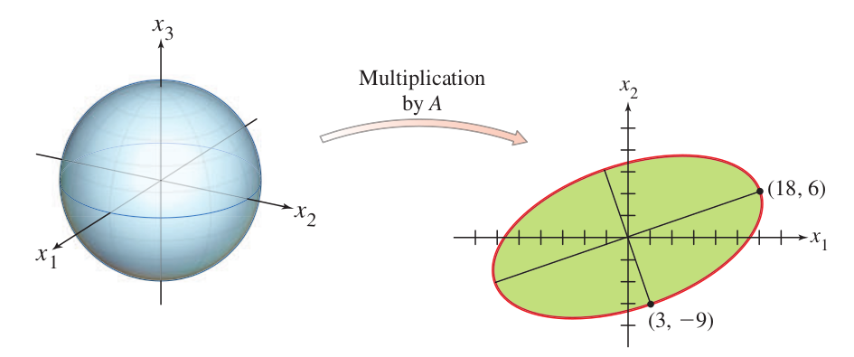
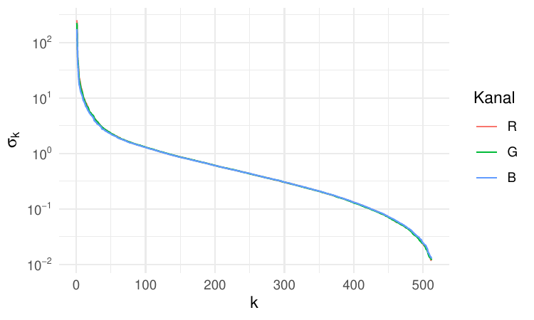
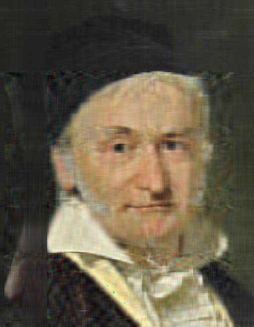
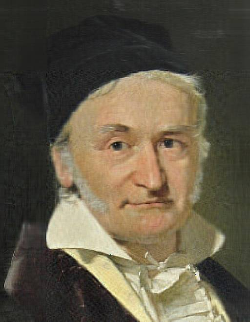

Fortgeschrittene mathematische Methoden in der Statistik
fabian.scheipl@lmu.de)\[ \definecolor{fmmgreen}{RGB}{0,158,115} \definecolor{fmmblue}{RGB}{0,114,178} \definecolor{fmmred}{RGB}{213,94,0} \definecolor{fmmorange}{RGB}{230,159,0} \definecolor{fmmpurple}{RGB}{158,87,213} \newcommand{\ind}{\unicode{x1D7D9}} \newcommand{\R}{{\mathbb{R}}} \newcommand{\N}{{\mathbb{N}}} \newcommand{\Q}{{\mathbb{Q}}} \newcommand{\C}{\mathbb{C}} \newcommand{\P}{\mathbb{P}} \newcommand{\Z}{{\mathbb{Z}}} \newcommand{\E}{{\mathbb{E}}} \newcommand{\K}{{\mathbb{K}}} \newcommand{\L}{\mathbb{L}} \newcommand{\F}{{\mathbb{F}}} \newcommand{\G}{\mathbb{G}} \newcommand{\S}{\mathbb{S}} \newcommand{\D}{{\mathbb{D}}} \newcommand{\bnull}{{\boldsymbol{0}}} \newcommand{\bzero}{{\boldsymbol{0}}} \newcommand{\ba}{{\boldsymbol{a}}} \newcommand{\bb}{{\boldsymbol{b}}} \newcommand{\bc}{{\boldsymbol{c}}} \newcommand{\bd}{{\boldsymbol{d}}} \newcommand{\be}{{\boldsymbol{e}}} \newcommand{\bg}{{\boldsymbol{g}}} \newcommand{\bh}{{\boldsymbol{h}}} \newcommand{\bi}{{\boldsymbol{i}}} \newcommand{\bj}{{\boldsymbol{j}}} \newcommand{\bk}{{\boldsymbol{k}}} \newcommand{\bl}{{\boldsymbol{l}}} \newcommand{\bn}{{\boldsymbol{n}}} \newcommand{\bo}{{\boldsymbol{o}}} \newcommand{\bp}{{\boldsymbol{p}}} \newcommand{\bq}{{\boldsymbol{q}}} \newcommand{\br}{{\boldsymbol{r}}} \newcommand{\bs}{{\boldsymbol{s}}} \newcommand{\bt}{{\boldsymbol{t}}} \newcommand{\bu}{{\boldsymbol{u}}} \newcommand{\bv}{{\boldsymbol{v}}} \newcommand{\bw}{{\boldsymbol{w}}} \newcommand{\bx}{{\boldsymbol{x}}} \newcommand{\by}{{\boldsymbol{y}}} \newcommand{\bz}{{\boldsymbol{z}}} \newcommand{\bA}{{\boldsymbol{A}}} \newcommand{\bB}{{\boldsymbol{B}}} \newcommand{\bC}{{\boldsymbol{C}}} \newcommand{\bD}{{\boldsymbol{D}}} \newcommand{\bE}{{\boldsymbol{E}}} \newcommand{\bF}{{\boldsymbol{F}}} \newcommand{\bG}{{\boldsymbol{G}}} \newcommand{\bH}{{\boldsymbol{H}}} \newcommand{\bI}{{\boldsymbol{I}}} \newcommand{\bJ}{{\boldsymbol{J}}} \newcommand{\bK}{{\boldsymbol{K}}} \newcommand{\bL}{{\boldsymbol{L}}} \newcommand{\bM}{{\boldsymbol{M}}} \newcommand{\bN}{{\boldsymbol{N}}} \newcommand{\bO}{{\boldsymbol{O}}} \newcommand{\bP}{{\boldsymbol{P}}} \newcommand{\bQ}{{\boldsymbol{Q}}} \newcommand{\bR}{{\boldsymbol{R}}} \newcommand{\bS}{{\boldsymbol{S}}} \newcommand{\bT}{{\boldsymbol{T}}} \newcommand{\bU}{{\boldsymbol{U}}} \newcommand{\bV}{{\boldsymbol{V}}} \newcommand{\bW}{{\boldsymbol{W}}} \newcommand{\bX}{{\boldsymbol{X}}} \newcommand{\bY}{{\boldsymbol{Y}}} \newcommand{\bZ}{{\boldsymbol{Z}}} \newcommand{\tagqed}{\tag*{$\blacksquare$}} \newcommand{\Acal}{{\mathcal{A}}} \newcommand{\Bcal}{{\mathcal{B}}} \newcommand{\Ccal}{{\mathcal{C}}} \newcommand{\Dcal}{{\mathcal{D}}} \newcommand{\Ecal}{{\mathcal{E}}} \newcommand{\Fcal}{{\mathcal{F}}} \newcommand{\Gcal}{{\mathcal{G}}} \newcommand{\Hcal}{{\mathcal{H}}} \newcommand{\Ical}{{\mathcal{I}}} \newcommand{\Jcal}{{\mathcal{J}}} \newcommand{\Kcal}{{\mathcal{K}}} \newcommand{\Lcal}{{\mathcal{L}}} \newcommand{\Mcal}{{\mathcal{M}}} \newcommand{\Ncal}{{\mathcal{N}}} \newcommand{\Ocal}{{\mathcal{O}}} \newcommand{\Pcal}{{\mathcal{P}}} \newcommand{\Qcal}{{\mathcal{Q}}} \newcommand{\Rcal}{{\mathcal{R}}} \newcommand{\Scal}{{\mathcal{S}}} \newcommand{\Tcal}{{\mathcal{T}}} \newcommand{\Ucal}{{\mathcal{U}}} \newcommand{\Vcal}{{\mathcal{V}}} \newcommand{\Wcal}{{\mathcal{W}}} \newcommand{\Xcal}{{\mathcal{X}}} \newcommand{\Ycal}{{\mathcal{Y}}} \newcommand{\Zcal}{{\mathcal{Z}}} \newcommand{\eps}{{\varepsilon}} \newcommand{\beps}{{\boldsymbol{\epsilon}}} \newcommand{\balpha}{{\boldsymbol{\alpha}}} \newcommand{\bbeta}{{\boldsymbol{\beta}}} \newcommand{\bchi}{{\boldsymbol{\chi}}} \newcommand{\bdelta}{{\boldsymbol{\delta}}} \newcommand{\bDelta}{{\boldsymbol{\Delta}}} \newcommand{\bepsilon}{{\boldsymbol{\epsilon}}} \newcommand{\bphi}{{\boldsymbol{\phi}}} \newcommand{\bgamma}{{\boldsymbol{\gamma}}} \newcommand{\betah}{{\boldsymbol{\eta}}} \newcommand{\btheta}{{\boldsymbol{\theta}}} \newcommand{\biota}{{\boldsymbol{\iota}}} \newcommand{\bkappa}{{\boldsymbol{\kappa}}} \newcommand{\blambda}{{\boldsymbol{\lambda}}} \newcommand{\bLambda}{{\boldsymbol{\Lambda}}} \newcommand{\bmu}{{\boldsymbol{\mu}}} \newcommand{\bnu}{{\boldsymbol{\nu}}} \newcommand{\bomikron}{{\boldsymbol{\omicron}}} \newcommand{\bpi}{{\boldsymbol{\pi}}} \newcommand{\bSigma}{{\boldsymbol{\Sigma}}} \newcommand{\bxi}{{\boldsymbol{\xi}}} \newcommand{\bzeta}{{\boldsymbol{\zeta}}} \newcommand{\bomega}{{\boldsymbol{\omega}}} \newcommand{\equivto}{{\Leftrightarrow}} \newcommand{\quequiv}{{\quad \equivto \quad}} \newcommand{\impl}{{\implies}} \newcommand{\quimpl}{{\quad \implies \quad}} \newcommand{\implby}{{\impliedby}} \newcommand{\notimplies}{\not\implies} \newcommand{\tr}{{\operatorname{tr}}} \newcommand{\spann}{{\operatorname{span}}} \newcommand{\col}{{\operatorname{col}}} \newcommand{\rang}{{\operatorname{rang}}} \newcommand{\diag}{{\operatorname{diag}}} \newcommand{\vec}{\operatorname{vec}} \newcommand{\pinv}{{^{+}}} \newcommand{\kron}{\mathbin{\otimes_{\mathrm{K}}}} \newcommand{\sign}{{\operatorname{sign}}} \newcommand{\la}{{\langle}} \newcommand{\ra}{{\rangle}} \newcommand{\inner}[1]{{\langle #1 \rangle}} \newcommand{\proj}{{\operatorname{proj}}} \newcommand{\bar}{\overline} \newcommand{\vol}{{\operatorname{vol}}} \newcommand{\dx}{{\, \mathrm{d}x}} \newcommand{\ol}{{\overline}} \newcommand{\argmax}{\mathop{\mathrm{arg\,max}}} \newcommand{\argmin}{\mathop{\mathrm{arg\,min}}} \newcommand{\conv}{\mathop{\mathrm{conv}}} \newcommand{\epi}{\mathop{\mathrm{epi}}} \newcommand{\interior}{\mathop{\mathrm{int}}} \newcommand{\Pr}{\mathbb{P}} \newcommand{\var}{{\mathbb{V}\mathrm{ar}}} \newcommand{\bias}{{\operatorname{bias}}} \newcommand{\abias}{{\mathrm{ABias}}} \newcommand{\AMSE}{{\mathrm{AMSE}}} \newcommand{\AMISE}{{\mathrm{AMISE}}} \newcommand{\cov}{{\mathbb{C}\mathrm{ov}}} \newcommand{\corr}{{\mathrm{Corr}}} \newcommand{\ov}{{\overline}} \newcommand{\wh}[1]{{\widehat{#1}}} \newcommand{\wt}[1]{{\widetilde{#1}}} \newcommand{\tod}{{\stackrel{d}{\to}}} \newcommand{\sumin}{{\sum_{i = 1}^n}} \newcommand{\sumjn}{{\sum_{j = 1}^n}} \newcommand{\KL}{{\operatorname{KL}}} \newcommand{\softmax}{{\operatorname{SoftMax}}} \newcommand{\layernorm}{{\operatorname{LayerNorm}}} \newcommand{\avg}{{\operatorname{avg}}} \newcommand{\relu}{{\operatorname{ReLu}}} \newcommand{\VC}{{\operatorname{VC}}} \newcommand{\indep}{{\perp \!\!\! \perp}} \newcommand{\unif}{{\operatorname{Unif}}} \newcommand{\bern}{{\operatorname{Bernoulli}}} \newcommand{\binomial}{{\operatorname{Binomial}}} \newcommand{\MSE}{{\operatorname{MSE}}} \newcommand{\iid}{\textit{iid}\;} \newcommand{\IF}{{\operatorname{IF} }} \newcommand{\BIC}{{\operatorname{BIC}}} \newcommand{\AIC}{{\operatorname{AIC}}} \newcommand{\IC}{{\operatorname{IC}}} \newcommand{\expl}[1]{{\tag*{[#1]}}} \newcommand{\cb}[1]{\textbf{#1}} \newcommand{\cbgreen}[1]{\textcolor{fmmgreen}{\textbf{#1}}} \newcommand{\cbred}[1]{\textcolor{fmmred}{\textbf{#1}}} \newcommand{\cbpurp}[1]{\textcolor{fmmpurple}{\textbf{#1}}} \newcommand{\cborange}[1]{\textcolor{fmmorange}{\textbf{#1}}} \newcommand{\corange}[1]{{\textcolor{fmmorange}{#1}}} \newcommand{\cblue}[1]{{\textcolor{fmmblue}{#1}}} \newcommand{\cgreen}[1]{{\textcolor{fmmgreen}{#1}}} \newcommand{\cred}[1]{{\textcolor{fmmred}{#1}}} \newcommand{\cpurp}[1]{{\textcolor{fmmpurple}{#1}}} \newcommand{\symbf}[1]{\boldsymbol{#1}} \]
Frage 1: Sei \(\bA \in \R^{n \times n}\) symmetrisch (\(\bA = \bA^\top\)). Welche Aussage gilt immer?
Frage 2: Was ist der Rang von \(\bA = \begin{pmatrix} 1 & 1 \\ 1 & 1 \\ 0 & 0 \end{pmatrix}\)?
Was wir wollen: Eine Zerlegung \(\bA = \bP\bD\bQ^{-1}\)
Die Einheitssphäre als Testfall:
Beispiel: \(\bA \in \R^{2 \times 3}\)

Maximierungsproblem:
\[\max_{\|\bx\| = 1} \|\bA\bx\|\]
Trick: Maximiere \(\|\bA\bx\|^2\) statt \(\|\bA\bx\|\)
\[\|\bA\bx\|^2 = (\bA\bx)^\top(\bA\bx) = \bx^\top(\bA^\top\bA)\bx\]
Erkenntnis: Dies ist eine quadratische Form bezüglich \(\bA^\top\bA\)!
Im Folgenden immer: \(\|\cdot\| \equiv \|\cdot\|_2\)!
Theorem: Eigenschaften von \(\bA^\top\bA\)
Für \(\bA \in \R^{m \times n}\) gilt:
Beweis für (2): \(\bx^\top\left(\bA^\top\bA\right)\bx = \|\bA\bx\|_2^2 \geq 0\); für jeden normierten Eigenvektor \(\bv_i\) (\(\|\bv_i\| = 1\)) gilt damit:
\[0 \leq \left\|\bA\bv_i\right\|_2^2 = \bv_i^\top\left(\bA^\top\bA\right)\bv_i = \bv_i^\top\left(\lambda_i\bv_i\right) = \lambda_i\]
Folgerung: \(\bA^\top\bA\) ist orthogonal diagonalisierbar!
Sei \(\bA = \begin{pmatrix} \cgreen{\ba_1} & \cblue{\ba_2} \end{pmatrix} = \begin{pmatrix} 1 & 2 \\ 2 & 1 \\ 1 & 0 \end{pmatrix} \in \R^{3 \times 2}\) \[\begin{align*} \bA^\top\bA &= \begin{pmatrix} \cgreen{\ba_1^\top} \\ \cblue{\ba_2^\top} \end{pmatrix} \begin{pmatrix} \cgreen{\ba_1} & \cblue{\ba_2} \end{pmatrix} = \begin{pmatrix} \cgreen{\ba_1^\top} \cgreen{\ba_1} & \cgreen{\ba_1^\top} \cblue{\ba_2} \\ \cblue{\ba_2^\top} \cgreen{\ba_1} & \cblue{\ba_2^\top} \cblue{\ba_2} \end{pmatrix}\\ &= \begin{pmatrix} 1 & 2 & 1 \\ 2 & 1 & 0 \end{pmatrix} \begin{pmatrix} 1 & 2 \\ 2 & 1 \\ 1 & 0 \end{pmatrix} = \begin{pmatrix} 6 & 4 \\ 4 & 5 \end{pmatrix} \end{align*}\]
Symmetrie: \(\checkmark\)
Positiv semidefinit: \[\begin{align*} \det\left(\bA^\top\bA - \lambda \bI\right) &= (6-\lambda)(5-\lambda) - 16 = \lambda^2 - 11\lambda + 14 = 0\\ \lambda_{1,2} &= \tfrac{11 \pm \sqrt{11^2 - 4\cdot 1 \cdot 14}}{2} = \tfrac{11 \pm \sqrt{65}}{2}\\ \implies \lambda_1 &\approx 9.53, \quad \lambda_2 \approx 1.47 \end{align*}\] \(\lambda_1, \lambda_2 > 0 \implies \bA^\top\bA\) hier sogar positiv definit – mehr als das vom Theorem garantierte “semidefinit”, da \(\bA\) vollen Spaltenrang hat (\(\text{rang}(\bA) = n = 2\))
Seien \(\lambda_1 \geq \lambda_2 \geq \cdots \geq \lambda_n\) die Eigenwerte von \(\bA^\top\bA\).
Def.: Singulärwerte
Die Singulärwerte von \(\bA\) sind:
\[\sigma_i = \sqrt{\lambda_i}, \quad i = 1, 2, \ldots, n\]
Interpretation:
Matrix \(\bA = \begin{pmatrix} 1 & 2 \\ 2 & 1 \\ 1 & 0 \end{pmatrix}:\qquad \bA^\top\bA\) mit \(\blambda \approx (9.53, 1.47)\):
Singulärwerte: \[\begin{align*} \sigma_1 &= \sqrt{\lambda_1} = \sqrt{9.53} \approx 3.09\\ \sigma_2 &= \sqrt{\lambda_2} = \sqrt{1.47} \approx 1.21 \end{align*}\]
Interpretation:
Def.: Rechte und linke Singulärvektoren
Rechte Singulärvektoren \(\bv_i\):
Linke Singulärvektoren \(\bu_i\):
Wichtige Eigenschaften:
Beweis der Orthonormalität: siehe Anhang
Matrix \(\bA = \begin{pmatrix} 1 & 2 \\ 2 & 1 \\ 1 & 0 \end{pmatrix}:\qquad \bA^\top\bA = \begin{pmatrix} 6 & 4 \\ 4 & 5 \end{pmatrix}\) mit \(\blambda \approx (9.53, 1.47)\):
Rechte Singulärvektoren (normierte Eigenvektoren von \(\bA^\top\bA\)):
\[\begin{pmatrix} 6 & 4 \\ 4 & 5 \end{pmatrix}\cgreen{\bv_1} = 9.53\,\cgreen{\bv_1} \;\implies\; \cgreen{\bv_1 \approx \begin{pmatrix} -0.75 \\ -0.662 \end{pmatrix}}, \qquad \cgreen{\bv_2 \approx \begin{pmatrix} -0.662 \\ 0.75 \end{pmatrix}} \text{ (normiert, orthogonal zu } \cgreen{\bv_1})\]
Linke Singulärvektoren (\(\cblue{\bu_i} = \bA\cgreen{\bv_i}/\sigma_i\)), eine Rechnung exemplarisch:
\[\cblue{\bu_1} = \frac{\bA\cgreen{\bv_1}}{\sigma_1} \approx \begin{pmatrix} 1 & 2 \\ 2 & 1 \\ 1 & 0 \end{pmatrix}\cgreen{\begin{pmatrix} -0.75 \\ -0.662 \end{pmatrix}} / 3.09 = \cblue{\begin{pmatrix} -0.672 \\ -0.7 \\ -0.243 \end{pmatrix}}, \qquad \text{analog: } \cblue{\bu_2 \approx \begin{pmatrix} 0.691 \\ -0.474 \\ -0.546 \end{pmatrix}}\]
Check: \(\bu_1^\top\bu_2 \approx 0\) und \(\|\bu_1\| \approx 1\) \(\checkmark\) (vollständige Rechnung: siehe Anhang)
Stimmt unsere Handrechnung? Vorhersage: Was liefert svd(A)?
$d
[1] 3.09 1.21
$u
[,1] [,2]
[1,] -0.672 0.691
[2,] -0.700 -0.474
[3,] -0.243 -0.546
$v
[,1] [,2]
[1,] -0.750 -0.662
[2,] -0.662 0.750d \(\approx (3.09, 1.21)\): wie von Hand berechnet \(\checkmark\)u, v: Singulärvektoren – Vorzeichen nicht eindeutig (\(\pm\bu_i\), \(\pm\bv_i\) ebenfalls gültig)!Theorem: Charakterisierung der Unterräume
Angenommen \(\bA\) hat \(r\) Singulärwerte ungleich Null. Dann:
\(\{\bv_1, \ldots, \bv_r\}\) ist Orthonormalbasis für \(\text{col}(\bA^\top)\) (Zeilenraum)
\(\{\bA\bv_1, \ldots, \bA\bv_r\}\) ist Orthogonalbasis für \(\text{col}(\bA)\) (Spaltenraum) – normiert (\(\|\bA\bv_i\| = \sigma_i\)) sind das die \(\{\bu_1, \ldots, \bu_r\}\)
\(\{\bv_{r+1}, \ldots, \bv_n\}\) ist Orthonormalbasis für \(\ker(\bA)\) (Nullraum)
\(\text{rang}(\bA) = r\)
Interpretation: SVD gibt uns explizite Orthonormalbasen für alle Fundamentalräume! (für den linken Nullraum \(\ker(\bA^\top)\): erweiterte \(\bu_{r+1}, \ldots, \bu_m\) → SVD-Hauptsatz & Beispiel)
Für \(\bA = \begin{pmatrix} 1 & 1 \\ 1 & 1 \\ 0 & 0 \end{pmatrix}\) mit \(\bA^\top\bA = \begin{pmatrix} 2 & 2 \\ 2 & 2 \end{pmatrix}\) und rang(\(\bA\)) = 1:
Weiter mit \(\bA = \begin{pmatrix} 1 & 1 \\ 1 & 1 \\ 0 & 0 \end{pmatrix}\), \(\;\cred{\bv_2 = \frac{1}{\sqrt{2}}\begin{pmatrix} 1 \\ -1 \end{pmatrix}}\), \(\;\cblue{\bu_2 = \frac{1}{\sqrt{2}}\begin{pmatrix} -1 \\ 1 \\ 0 \end{pmatrix}}\), \(\;\cblue{\bu_3 = \begin{pmatrix} 0 \\ 0 \\ 1 \end{pmatrix}}\):
(Rechter) Nullraum: ker(\(\bA\)) = span\(\{\cred{\bv_2}\}\) = span\(\left\{\cred{\begin{pmatrix} 1 \\ -1 \end{pmatrix}}\right\}\) Verifikation: \(\bA\cred{\begin{pmatrix} 1 \\ -1 \end{pmatrix}} = \begin{pmatrix} 0 \\ 0 \\ 0 \end{pmatrix} \quad\checkmark\)
Linker Nullraum: ker(\(\bA^\top\)) = span\(\{\cblue{\bu_2}, \cblue{\bu_3}\}\) = span\(\left\{\cblue{\begin{pmatrix} -1 \\ 1 \\ 0 \end{pmatrix}}, \cblue{\begin{pmatrix} 0 \\ 0 \\ 1 \end{pmatrix}}\right\}\) Verifikation: \(\bA^\top \cblue{\begin{pmatrix} -1 & 0 \\ 1 & 0 \\ 0 & 1 \end{pmatrix}} = \begin{pmatrix} 0 & 0 \\ 0 & 0 \end{pmatrix} \quad\checkmark\)
Theorem: Singulärwertzerlegung
Sei \(\bA \in \R^{m \times n}\) mit \(\text{rang}(\bA) = r\). Dann existiert eine Zerlegung:
\[\bA = \bU\bSigma \bV^\top\]
wobei:
Beweis (Konstruktionsskizze): siehe Anhang
Form der Matrix \(\bSigma\):
\[\bSigma = \begin{pmatrix} \text{diag}(\sigma_1, \ldots, \sigma_r) & 0_{r \times (n-r)} \\ 0_{(m-r) \times r} & 0_{(m-r) \times (n-r)} \end{pmatrix}\]
Beispiele:
\(\bA\) quadratisch (\(m = n = 3\), \(r = 2\)):
\[\bSigma = \begin{pmatrix} \sigma_1 & 0 & 0 \\ 0 & \sigma_2 & 0 \\ 0 & 0 & 0 \end{pmatrix}\]
\(\bA\) rechteckig (\(m = 2\), \(n = 3\), \(r = 2\)):
\[\bSigma = \begin{pmatrix} \sigma_1 & 0 & 0 \\ 0 & \sigma_2 & 0 \end{pmatrix}\]
Transformation: \(\bx \mapsto \bA\bx = \bU\bSigma \bV^\top\bx\)
Drei Schritte:
\(\implies\) SVD zerlegt jede lineare Transformation von \(\mathbb{R}^n\) nach \(\mathbb{R}^m\) in “Drehen-Strecken-Drehen”.
Problem: Viele Nulleinträge in \(\bSigma \in \R^{m \times n}\), sobald \(\text{rang}(\bA) = r < m\) oder \(r < n\) (\(\bA\) rangdefizient oder nicht quadratisch):
Idee: Partitioniere \(\bU = (\bU_r \mid \bU_{m-r})\), \(\bV = (\bV_r \mid \bV_{n-r})\) mit \(\bU_r \in \R^{m \times r}\), \(\bV_r \in \R^{n \times r}\) und behalte nur die ersten \(r\) Singulärwerte und -vektoren:
Def.: Reduzierte SVD
Die reduzierte SVD von \(\bA\) mit \(\text{rang}(\bA) = r\) ist \[\bA = \bU_r \bSigma_r \bV_r^\top\]
wobei:
Vorteile:
Motivation: Was wenn \(\bA\) nicht quadratisch/invertierbar?
Def.: Moore-Penrose Pseudoinverse
Für jede Matrix \(\bA \in \R^{m \times n}\) mit Rang \(r \geq 1\) und reduzierter SVD \(\bA = \bU_r \bSigma_r \bV_r^\top\) ist die Moore-Penrose Pseudoinverse:
\[\bA^+ := \bV_r \bSigma_r^{-1} \bU_r^\top \in \R^{n \times m}\]
Bemerkung:
\(\bSigma_r^{-1} = \text{diag}(1/\sigma_1, \ldots, 1/\sigma_r)\); für \(\bA = \bnull\) (also \(r = 0\)) setzt man \(\bA^+ = \bnull \in \R^{n \times m}\)
Theorem: Eigenschaften von \(\bA^+\)
Warum Projektion?
\(\bA\bA^+ = \bU_r\bSigma_r\bV_r^\top\bV_r\bSigma_r^{-1}\bU_r^\top = \bU_r\bU_r^\top\), und die Spalten von \(\bU_r\) sind eine Orthonormalbasis von \(\text{col}(\bA)\).
Spezialfälle:
Bisher: \(\|\bA\|_2 = \sqrt{\lambda_{\max}\left(\bA^\top\bA\right)}\)
Aus Definition SVD ist bekannt, dass \(\lambda_j\left(\bA^\top\bA\right) = \sigma_j(\bA)^2\)
Also:
\[\|\bA\|_2 = \sigma_{\max}(\bA)\]
Interpretation: Größter Singulärwert = maximale Streckung
SVD in Summenform: \[\bA = \bU_r \bSigma_r \bV_r^\top = \sum_{i=1}^r \sigma_i \bu_i \bv_i^\top\]
Interpretation:
Idee für Approximation: Verwende nur die wichtigsten Terme!
Low-Rank Approximation:
\[\bA_k = \sum_{i=1}^k \sigma_i \bu_i \bv_i^\top \quad (k < r)\]
Theorem: Optimale Approximation
\(\bA_k\) ist beste Rang-\(k\) Approximation von \(\bA\) bezüglich der Frobenius- und Spektral-Normen, d.h. \(\bA_k\) löst beide Approximationsprobleme: \[ \bA_k \in \arg\min_{\substack{\bB \in \R^{m \times n} \\ \text{rang}(\bB) \leq k}} \|\bA - \bB\|_F \quad\text{und}\quad \bA_k \in \arg\min_{\substack{\bB \in \R^{m \times n} \\ \text{rang}(\bB) \leq k}} \|\bA - \bB\|_2 \]
Approximationsfehler:
Interpretation: Fehler bestimmt durch weggelassene Singulärwerte
Nicht-Eindeutigkeit in Spektralnorm: Für \(\bA=\diag(3,2)\), \(k=1\) und \(\bB_b=\diag(b,0)\) gilt \(\|\bA-\bB_b\|_2=\max\{|3-b|,2\}\). Damit sind alle \(b\in[1,5]\) optimal; die abgeschnittene SVD entspricht \(b=3\). In Frobenius-Norm ist nur \(b=3\) optimal, denn der Fehler ist \(\sqrt{(3-b)^2+2^2}\).
Kriterien für die Wahl von \(k\):
1. Relativer Fehler (Spektralnorm):
\[\frac{\|\bA - \bA_k\|_2}{\|\bA\|_2} = \frac{\sigma_{k+1}}{\sigma_1}\]
2. Relativer Fehler (Frobenius-Norm):
\[\frac{\|\bA - \bA_k\|_F}{\|\bA\|_F} = \frac{\sqrt{\sum_{i=k+1}^r \sigma_i^2}}{\sqrt{\sum_{i=1}^r \sigma_i^2}}\]
3. “Energieerhaltung”:
\[\frac{\sum_{i=1}^k \sigma_i^2}{\sum_{i=1}^r \sigma_i^2} \geq p \quad \text{(p*100\% der "Energie")}\]
Praktische Heuristik: \(k\) am “Ellenbogen” im \(\log(\sigma_i)\)-Plot wählen – dort, wo die Singulärwerte abknicken. (Typische Verläufe: siehe Anhang)
Bildkompression – Originalbild: \(659 \times 512\) Pixel-Matrix (pro Farbkanal)



Bildquelle: C. A. Jensen, Porträt C. F. Gauß (1840), gemeinfrei (Wikimedia Commons).
Collaborative Filtering / Recommender Systems
Problem: Netflix-Szenario: \(m\) Nutzer, \(n\) Filme, aber Daten sehr sparse: meiste Nutzer haben meiste Filme nicht bewertet
\[\bR = \begin{pmatrix} 5 & ? & 1 & ? & 4 \\ ? & 3 & ? & 4 & ? \\ 2 & 1 & ? & ? & 5 \\ ? & 5 & 4 & 3 & ? \end{pmatrix} \in \R^{m \times n}\]
Idee: Nutzer-Film-Präferenzen liegen in einem niedrigdimensionalen Raum (Genres und Nutzerklassen).
SVD-Ansatz:
Interpretation: \(\bv_j\) = “gelernte” Film-Genres, \(\bu_i\) = Nutzer-Präferenzen in diesen Genre-Dimensionen, \(\sigma_i\) = Wichtigkeit der Dimension (mehr: siehe Anhang)
Ideale Situationen für SVD:
Rechenaufwand:
| Eigenschaft | Eigenwertzerlegung | SVD |
|---|---|---|
| Matrix-Typ | Quadratisch | Beliebig \(m \times n\) |
| Orthogonale Zerlegung | Nur symmetrisch (\(\to\) Spektralzerlegung) | Immer |
| Numerische Stabilität | Kann instabil sein | Stabil |
| Existenz | Nur für diagonalisierbare \(\bA\) | Immer |
| Geometrische Interpretation | Hauptachsen (symmetrisch) | “Optimale” Koordinaten |
Kernkonzepte:
Anwendungen: Lösung von Kleinste-Quadrate-Problemen, optimale Low-Rank Approximation (Datenkompression, -analyse)
Praktische Hinweise:
svd(A)irlba::irlba(A, nv = k) (iterativ, Lanczos) bzw. irlba::svdr(A, k) (randomisiert)Welche Aussagen sind korrekt?
Warum sind die \(\sigma_i\bu_i = \bA\bv_i\) orthogonal?
Für \(i \neq j\): \[\begin{align*} \cgreen{\left(\bA\bv_i\right)^\top\left(\bA\bv_j\right)} &= \bv_i^\top\cblue{\left(\bA^\top\bA\right)\bv_j} \\ &= \bv_i^\top\cblue{\left(\lambda_j\bv_j\right)} \\ &= \lambda_j\cred{\left(\bv_i^\top\bv_j\right)} \\ &= \lambda_j \cdot \cred{0} = 0 \end{align*}\]
Für \(i = j\): \[\|\bA\bv_i\|^2 = \bv_i^\top\left(\bA^\top\bA\right)\bv_i = \lambda_i \|\bv_i\|^2 = \lambda_i = \sigma_i^2\]
\(\implies\) Für \(i, j \leq r\) (also \(\sigma_i, \sigma_j > 0\)) ist \(\bu_i^\top\bu_j = \tfrac{(\bA\bv_i)^\top(\bA\bv_j)}{\sigma_i\sigma_j} = 0\) für \(i \neq j\) bzw. \(= 1\) für \(i = j\): Die \(\bu_1, \ldots, \bu_r\) sind orthonormal! (Die übrigen \(\bu_{r+1}, \ldots, \bu_m\) werden als orthonormale Ergänzung gewählt.)
Matrix \(\bA = \begin{pmatrix} 1 & 2 \\ 2 & 1 \\ 1 & 0 \end{pmatrix}:\qquad \bA^\top\bA\) mit \(\blambda \approx (9.53, 1.47)\):
Rechte Singulärvektoren (Eigenvektoren von \(\bA^\top\bA\)):
Für \(\lambda_1 \approx 9.53\): \[\begin{pmatrix} 6 & 4 \\ 4 & 5 \end{pmatrix}\cgreen{\begin{pmatrix} v_1^{(1)} \\ v_2^{(1)} \end{pmatrix}} = 9.53\cgreen{\begin{pmatrix} v_1^{(1)} \\ v_2^{(1)} \end{pmatrix}}\]
Lösung: \(\cgreen{\bv_1 \approx \begin{pmatrix} -0.75 \\ -0.662 \end{pmatrix}}\)
Für \(\lambda_2 \approx 1.47\): \(\cgreen{\bv_2 \approx \begin{pmatrix} -0.662 \\ 0.75 \end{pmatrix}}\) (normiert, orthogonal zu \(\cgreen{\bv_1}\))
Linke Singulärvektoren:
\[\cblue{\bu_1} = \frac{\bA\cgreen{\bv_1}}{\sigma_1} \approx \begin{pmatrix} 1 & 2 \\ 2 & 1 \\ 1 & 0 \end{pmatrix}\cgreen{\begin{pmatrix} -0.75 \\ -0.662 \end{pmatrix}} / 3.09 = \cblue{\begin{pmatrix} -0.672 \\ -0.7 \\ -0.243 \end{pmatrix}}, \qquad \text{analog: } \cblue{\bu_2} = \frac{\bA\cgreen{\bv_2}}{\sigma_2} \approx \cblue{\begin{pmatrix} 0.691 \\ -0.474 \\ -0.546 \end{pmatrix}}\]
Verifikation Orthonormalität:
Konstruktion der Zerlegung:
Rechte Singulärvektoren: Eigenvektoren von \(\bA^\top\bA\) \[\bV = (\cgreen{\bv_1} \mid \cgreen{\bv_2} \mid \cdots \mid \cgreen{\bv_n})\]
Linke Singulärvektoren: \(\cblue{\bu_i} = \bA\cgreen{\bv_i}/\sigma_i\) für \(i \leq r\) \[\bU_r = (\cblue{\bu_1} \mid \cblue{\bu_2} \mid \cdots \mid \cblue{\bu_r})\]
Vervollständigung: Erweitere \(\bU_r\) zu Orthogonalbasis des \(\R^m\)
Verifikation: \(\bA\cgreen{\bv_i} = \sigma_i\cblue{\bu_i}\) für \(i \leq r\), \(\bA\cgreen{\bv_i} = \mathbf{0}\) für \(i > r\)
1. Schneller Abfall: \(\sigma_i \approx c \cdot e^{-\alpha i}\)
2. Linearer Abfall: \(\sigma_i \approx c - \alpha i\)
3. Langsamer Abfall: \(\sigma_i \approx c \cdot i^{-\alpha}\)
Interpretation der Faktoren:
Vorteile:
Modernere Varianten: